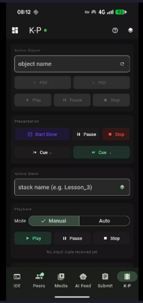
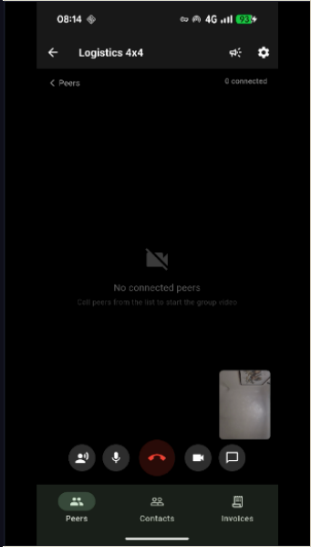
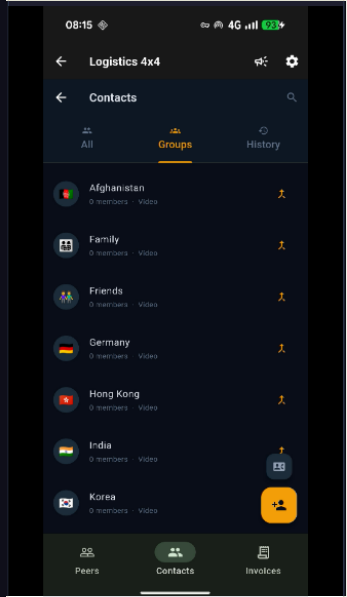
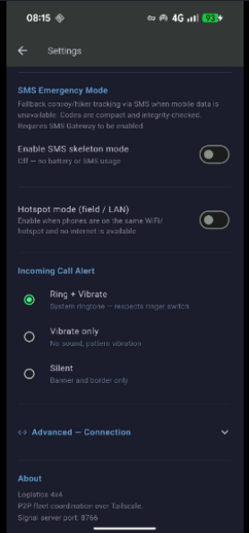

Screen 8

Screen 9

Screen 10

Screen 11

Screen 12

Screen 13

Screen 14
Grenzüberschreitende Flottenkommunikation für kleine Betreiber. Vier SIM-Anrufer und vier P2P-Video-Peers teilen sich einen einzigen Anrufbereich – Fahrer an der Grenze, Zentrale, Zoll, Kunde – alle gleichzeitig im Raum. Live-Karten, GPX-Routen, Frachtmanifeste, übersetzter Voice-Chat und Notfallmeldungen, alles auf einem Standard-Android-Telefon.
SIM-Telefonanrufe und P2P-Video teilen sich einen verbundenen Raum
Logistics 4×4 zielt nicht darauf ab, eine professionelle proprietäre Logistikplattform zu ersetzen, wie sie von großen Kuriernetzwerken verwendet wird. Es füllt die Lücke für kleine Betreiber, Einzelunternehmer und Situationen, die ein Tool für Großunternehmen nicht erreichen kann – ein Fahrer an einem abgelegenen Grenzübergang, der sofort mit der Zentrale verbunden werden muss, ein zweiter Fahrer drei Meilen zurück, der Zollinspektor in der Kabine und der Kunde in einem anderen Land, der sich nur per Telefon einwählen kann.
Entwickelt für anspruchsvolle Feldkommunikation mit geringer Infrastruktur
Der Fahrer verbindet den Zollbeamten (SIM-Anruf), die Zentrale (Video), den empfangenden Kunden (SIM-Anruf) und einen zweiten Fahrer im Konvoi (Video) – alles gleichzeitig, mit live übersetztem Chat, der für alle sichtbar ist.
LKWs, die über 50 Meilen verteilt sind, bleiben in einem gemeinsamen Anruf mit Push-to-Talk, Standortfreigabe auf derselben Live-Karte und Dispatcher-Routen-Pushs, die als direkt in die Karte geladene GPX-Dateien eintreffen.
Kein Datensignal? Der Offline-Kompass zeigt jedem anderen Flottenmitglied Peilpfeile an. POI-Pins markieren Tankstopps, Gefahrenstellen und Treffpunkte – eingebettet in eine gepushte GPX-Datei oder von jedem Fahrer auf der Karte abgelegt. Langstrecken-Hotspot-Verbindungen zwischen LKWs mit Richtantennen können eine Reichweite von über 50 Meilen erreichen.
Push-to-Talk transkribiert Gesprochenes, erkennt die Sprache des Sprechers, übersetzt und liefert Text und Audio im jeweiligen Gebietsschema jedes Zuhörers – 15 Sprachen, unterstützt von einem lokalen Argos Translate-Server auf dem Telefon.
Der Fahrer scannt den QR-Code des Depots, um das Manifest zu laden, und scannt dann den POD-QR des Kunden bei der Lieferung. Lieferung verweigert? Machen Sie ein Foto und eine schriftliche Ausnahmenotiz. Auf dem Bildschirm erfasste Kundenunterschrift.
Der Dispatcher-Bildschirm zeigt alle Fahrer auf der Live-Karte an, führt das Laufblatt aus, sendet Manifeste und Routen über den Peer-Kanal an einzelne Fahrer und sendet flottenweite Notfallwarnungen.
OSM-, Satelliten- und Hybridebenen – Peer-Standorte, GPX-Routen, Points of Interest und Offline-Kachel-Cache
Wechseln Sie zwischen Straße (OpenStreetMap), Satellit (Esri World Imagery) und Hybrid (Satellitenbasis + OSM-Straßen-Overlay) mit einem einzigen Tastendruck. Alle Kacheln werden auf der Festplatte zwischengespeichert – zuvor angezeigte Bereiche werden offline ohne Daten geladen.
Jedes Flottenmitglied, das die Standortfreigabe aktiviert, wird als Live-Pin angezeigt. Tippen Sie auf eine Stecknadel, um ihren Namen und ihre voraussichtliche Ankunftszeit anzuzeigen. Der Disponent kann die gesamte Flotte auf einen Blick sehen, ohne dass eine separate Tracking-Plattform erforderlich ist.
Büro drängt a .gpx Leiten Sie die Datei vom Chameleon-PC über den Peer-Kanal direkt an das Telefon eines Fahrers weiter. Die Route wird sofort als farbiges Overlay in die Karte geladen. Aktuelle Routen werden zur Wiederverwendung lokal gespeichert. Unterstützt die Koordinatenversatzkorrektur GCJ-02 für China.
Die Karte dreht sich live mit dem Gerätekompass für eine vorausschauende Fahrorientierung oder wird für die herkömmliche Kartenlesung nach Norden ausgerichtet – schalten Sie die Einstellungen je nach Fahrerpräferenz ein.
Keine Daten? Die Kompassrose im Vollbildmodus zeigt einen Peilungspfeil für jeden Online-Peer, der das zuletzt bekannte GPS verwendet. Peer-Entfernungen und Kompasskurse werden von zwischengespeicherten Standorten aktualisiert – nützlich für Wanderer, die Navigation in Konvois im Gelände und die Koordinierung der Bergrettung.
Drei POI-Quellen werden als farbcodierte Pins auf der Karte angezeigt. Bernstein Stifte kommen von <wpt> Wegpunkte, die in eine GPX-Datei eingebettet sind – sie werden mit der Route geladen und mit ihr gelöscht. Grün Pins werden unabhängig von der Route direkt aus der Chameleon PC IDE (Tankstopps, Gefahren, Lieferadressen) geschoben. Rot Pins werden vom Fahrer durch langes Drücken auf die Karte abgelegt. Alle POIs bleiben sitzungsübergreifend bestehen; Tippen Sie auf eine beliebige Stecknadel, um zu navigieren, sie in Karten zu öffnen oder zu löschen. Symbole passen sich dem Typ an: ⛽ Kraftstoff, 🚚 Lieferung, ⚠️ Gefahr, 🏥 Krankenhaus, 🅿️ Parken, ✈️ Flughafen und mehr.
Jeder Bildschirm und Dienst in der App
Full-Mesh-WebRTC-Video und -Audio für bis zu 4+ Peers – kein zentraler Medienserver, keine monatliche Anrufrechnung. Adaptives Raster: 1 Peer = Vollbild, 2 = nebeneinander, 3 = 2+1, 4 = 2×2. Lokaler Feed wird als Bild-im-Bild angezeigt. Die Bitrate skaliert pro Peer (1,5 Mbit/s → 350 Kbit/s), um die Qualität auch bei jeder Gruppengröße aufrechtzuerhalten. Eingehende Anrufe klingeln und vibrieren, auch wenn die App im Hintergrund läuft.
Sie führen einen Mobilfunkanruf und möchten einen P2P-Partner hinzuziehen? Klopfen Zur Gruppe hinzufügen – Der Telekommunikations-Stack von Android registriert die WebRTC-Sitzung neben dem SIM-Anruf und bietet eine native Option „Anrufe zusammenführen“. Die Audiomischung erfolgt im Telefonchip – Nur Ohrhörer, völlig privat. Wenn das Gerät oder der Mobilfunkanbieter keine Hardwarekonferenz unterstützt, wird das Bluetooth SCO-Headset-Routing als Fallback verwendet.
Halten Sie die PTT-Taste gedrückt, um zu sprechen – die Spracherkennung von Android (16 kHz, 16 Bit) transkribiert Text in Echtzeit. Die erkannte Sprache wird an ein Gerät gesendet Argos Translate Server. Jeder Zuhörer erhält die Nachricht, übersetzt in sein eigenes ausgewähltes Gebietsschema und vorgelesen von TTS. Teiltranskriptionen werden während der Aufnahme als Live-Tippindikator gestreamt. Funktioniert über den P2P-Kanal oder eigenständig über einen Hotspot.
Der Dispatcher sendet eine Nachricht flottenweit – sie erscheint als Tickerleiste in voller Breite oben auf jedem Bildschirm. Vier Prioritätsstufen: Notfall (rot blinkend, Rate pro Absender begrenzt), Wichtig (rot auf weiß), Anweisungen (schwarz auf grün), Info (Gelb auf Schwarz). Nachrichten können die TTS-Auslesung auf den Telefonen der Empfänger auslösen. Konfigurierbare TTL: 1 Minute bis „bis zur Entlassung“.
Dispatcher-Ansicht mit drei Registerkarten: Treiber (Live-Positionen, Push-Manifeste, Routen zuweisen), Laufblatt (Drag-to-Reorder-Multi-Drop-Stopps, Tap-to-Cycle-Status, CSV-Import/Export) und Frachtmanifest (QR-Scan beim Laden im Depot, POD-QR-Scan bei der Lieferung). Der Disponent kann GPX-Routen und Rechnungsdateien über den Peer-Kanal direkt an einzelne Fahrer weiterleiten.
Scannen Sie den Depot-QR-Code, um Artikel in das Manifest zu laden. Scannen Sie bei der Lieferung den POD-QR des Kunden, um ihn als geliefert zu markieren. Ausnahmebehandlung: Verweigerte Lieferung protokolliert ein Foto und eine schriftliche Notiz; Safe-Drop zeichnet ein Foto des Abwurforts auf; Die Unterschrift des Kunden wird auf dem Touchscreen erfasst. Alle Ereignisse sind mit einem Zeitstempel mit GPS-Koordinaten versehen.
Multi-Drop-Lieferliste mit Drag-to-Reorder-Stopps. Tippen Sie auf das Statussymbol, um die einzelnen Stopps zu durchlaufen: Ausstehend → Angekommen → Geliefert. Tippen Sie auf eine beliebige Adresse, um sie in der Karten-App des Telefons für die Turn-by-Turn-Navigation zu öffnen. Import aus CSV – Header-fähig, kompatibel mit Onfleet, Routific, Circuit und benutzerdefinierten Exporten. Als CSV exportieren und über das Systemfreigabeblatt teilen.
Erstellen, drucken und teilen Sie Rechnungen direkt vom Telefon aus. Office kann eine vorgefertigte Rechnung vom Chameleon PC-Buchhaltungsmodul über den Peer-Kanal an den Fahrer weiterleiten – der Fahrer überprüft, unterschreibt und sendet sie sofort. Rollengesteuertes Buchhaltungs-Dashboard: Gast (nur Gesamtsummen), Operator (vollständige Transaktionen + Rechnungen) und Administrator (MTD-Einreichung + QR-Zugriffsgewährung).
Keine Daten? Die App greift auf ein kompaktes codiertes Protokoll zurück. Fahrer (D), Wanderer (H) und Notdienste (X)-Profile haben eine universelle Alarmskala gemeinsam. GPS-Koordinaten werden automatisch eingebettet. Nachrichten werden beim Empfang von TTS dekodiert und vorgelesen. A99+H99 ist das universelle SOS – es wird mit einem Tastendruck an alle Kontakte und Flottenkollegen gesendet. Wenn Daten verfügbar sind, werden Frames über den Peer-Kanal statt über SMS übertragen – wählbar pro Versand: Nur SMS, Nur Gleichgesinnte, oder Beide.
Einheitliches Kontaktbuch, das SIM-Telefonnummern, Tailscale-Peer-IDs und gemischte Gruppen kombiniert. Erstellen Sie eine Grenzteam Gruppe mit zwei P2P-Peers und einer SIM-Nummer – tippen Sie auf die Gruppe, um einen Anruf an alle drei zu starten. Anrufverlauf mit Zeitstempeln. Avatar-Fotos pro Kontakt. Jedes Flottenmitglied legt in den Einstellungen ein Profilfoto fest – es wird automatisch über den Signalkanal geteilt, wenn es eine Verbindung herstellt, sodass jeder Peer ein echtes Foto anstelle eines Anfangsbuchstabens sieht.
Verbinden Sie sich über Tailscale (remote, über das Internet) oder direkt LAN / Hotspot – nützlich für LKWs im Konvoi oder wenn eine Richtantenne mit großer Reichweite eingebaut ist (50+ Meilen in offenem Gelände). Die automatische mDNS-Erkennung findet andere Flottentelefone im selben WLAN, ohne dass IP-Adressen manuell eingegeben werden müssen.
Null-Konfigurations-Hub-Wahl – Wenn kein PC läuft, wählen Telefone automatisch einen Hub: Das Flottenmitglied mit der niedrigsten Tailscale-IP wird zum Signalisierungs-Hub und die übrigen verbinden sich als Spokes. Keine Konfiguration erforderlich. IP-Adressfelder bieten eine automatische Vervollständigung per Tap-to-Fill aus der geprüften Tailscale-Geräteliste, wobei die grün/grauen Erreichbarkeitsindikatoren alle 30 Sekunden aktualisiert werden.
Die App kann als dauerhafte Überlagerung über allen anderen Apps schweben – nützlich, wenn ein Fahrer die Navigation überprüfen muss, während der Anruf in einer Ecke des Bildschirms aktiv bleibt. Bei eingehenden Peer-Anrufen wird das Overlay automatisch durch Klingeln und Vibration in den Vordergrund geholt, sodass der Fahrer keinen dringenden Anruf von der Leitstelle verpasst.
Verbindet sich über WebSocket mit der Chameleon AI IDE auf einem Desktop- oder Büro-PC. Das Büro kann GPX-Routen, POI-Sets, Rechnungs-PDFs und Manifestdaten über den ständig aktiven Signalkanal an Fahrer übertragen – kein aktiver Videoanruf erforderlich. Der Signalserver läuft auf dem PC oder einem beliebigen Telefon; Kein Cloud-Relay erforderlich.
IDE-Beacon-Modi — Der PC sendet automatisch ein UDP-Signal an alle Flottentelefone: Obligatorisch zwingt alle Telefone, sofort eine Verbindung zum PC-Server herzustellen; Optional verbindet inaktive Telefone (Telefone in einem Live-P2P-Anruf stellen die Verbindung wieder her, wenn der Anruf endet); Aus ermöglicht es Telefonen, anhand der niedrigsten Tailscale-IP selbst einen Hub zu wählen. Wechseln Sie den Modus zur Laufzeit über einen einfachen REST-Aufruf oder über die Umschaltfunktion der IDE-Benutzeroberfläche.
Vollständige UI-Übersetzung plus Live-PTT-Sprachübersetzung mit Argos Translate auf dem Gerät
Der PTT-Dienst erkennt die Sprache des Sprechers automatisch – ein deutschsprachiger Fahrer und ein spanischsprachiger Disponent können frei Push-to-Talk nutzen, ohne jedes Mal eine Sprache auswählen zu müssen.
Übersetzungen werden von einem Argos Translate-Server verwaltet, der lokal auf dem Telefon in Termux ausgeführt wird. Sprache und Text verlassen zur Übersetzung nie das Gerät. Funktioniert offline, sobald Sprachpakete installiert sind.
Nach der Übersetzung wird jede Nachricht mithilfe von Android TTS im Gebietsschema des Empfängers vorgelesen – der Zuhörer hört die übersetzte Nachricht, auch ohne auf den Bildschirm zu schauen, ideal für einen Fahrer, der die Straße im Auge behält.
Ein kompaktes Codeprotokoll, das über SMS funktioniert, wenn Daten verloren gehen, oder über den Flotten-Peer-Kanal, wenn dies nicht der Fall ist
Wenn keine mobilen Daten verfügbar sind – tief im Busch, an einem abgelegenen Grenzübergang oder während eines Netzwerkausfalls – sendet Logistics 4×4 codierte Statusrahmen über Standard-SMS. Wenn Daten Ist Wenn verfügbar, werden dieselben Frames mit voller Geschwindigkeit über den Flotten-Peer-Kanal übertragen. Mit einem Selektor pro Versand können Sie auswählen Nur SMS, Nur Gleichgesinnte, oder Beide. SOS wird unabhängig von der Einstellung immer auf allen verfügbaren Kanälen gleichzeitig ausgelöst.
Die Codes sind in drei Benutzerprofile unterteilt, die ein gemeinsames Warnvokabular haben: D – Fahrer (Grenze, Ladung, Konvoi, Treibstoff, Straßenverhältnisse), H – Wanderer (Vitalwerte, Weg, Ausrüstung, Check-in-Zeitplan) und X – Notdienste (Triage, Art des Vorfalls, Ressourcen vor Ort, Evakuierungsstatus). Ein SOS aus jedem Profil wird von allen verstanden.
Das Notfalldienstprofil verwendet die internationale Triage-Skala P1–P4 (unmittelbar/verzögert/geringfügig/erwartend) und Vorfallkategorien, die an dem METHANE-Rahmen für schwere Vorfälle ausgerichtet sind, der von gemeinsamen Notfalldiensten weltweit verwendet wird. Ein Sanitäter oder SAR-Koordinator, der an einem behördenübergreifenden Einsatz teilnimmt, wird die Terminologie sofort erkennen.
Eingehende verschlüsselte Nachrichten werden dekodiert und per Text-to-Speech vorgelesen – ein Fahrer, der die Straße im Auge behält, oder ein Helfer mit beschäftigten Händen hört die vollständige Klartextbedeutung jedes Codes, ohne das Telefon zu berühren. Beschädigte Nachrichten lösen eine automatische Anforderung zum erneuten Senden aus.
Die vollständige Codetabelle für Fahrer-, Wanderer- und Notfalldiensteprofile. Laden Sie es als PDF herunter und bewahren Sie eine Kopie auf Ihrem Telefon, im Taxi oder in Ihrem Rucksack auf.
📥 Code-Referenz ansehen und herunterladenKein Ersatz für Unternehmenslogistiksoftware – eine Lösung dort, wo Unternehmenssoftware nicht verfügbar ist
WebRTC-Peer-Anrufe erfolgen direkt von Telefon zu Telefon ohne Media-Relay-Server und ohne monatliche Gebühr pro Benutzer. Die App läuft auf Standard-Android-Telefonen, die das Team bereits besitzt.
Konzipiert für Grenzübergänge, abgelegenes Gelände und internationale Einsätze, bei denen Standard-Logistik-Apps eine schnelle, zuverlässige Datenverbindung voraussetzen. Greift auf den Offline-Kompass und zwischengespeicherte Karten zurück, wenn Daten verschwinden.
Keine spezielle Hardware. Keine MDM-Registrierung. Jedes Android 7.0+-Telefon (minSdk 24), auf dem die APK ausgeführt wird, ist ein vollständiger Flottenknoten. Eine an einem LKW-Fahrerhaus angebrachte Hotspot-Antenne mit großer Reichweite kann die P2P-Abdeckung im offenen Gelände auf über 50 Meilen erweitern.
Zu den geplanten Ergänzungen gehören die vollständige Tachographen-Compliance, die Überwachung der Dienststunden, die DVSA-Integration digitaler Tachographen und der KML/GeoJSON-Import für POI-Massen-Upload. Das Fundament ist bereits errichtet.
Logistics 4×4 — captured live on device




Derzeit in der Testphase – kontaktieren Sie uns, um einen Piloten zu besprechen, einen Bau anzufordern oder nach der Lizenzierung für Ihre Flotte zu fragen.
Nehmen Sie Kontakt auf ← Begleit-App ← Übersicht